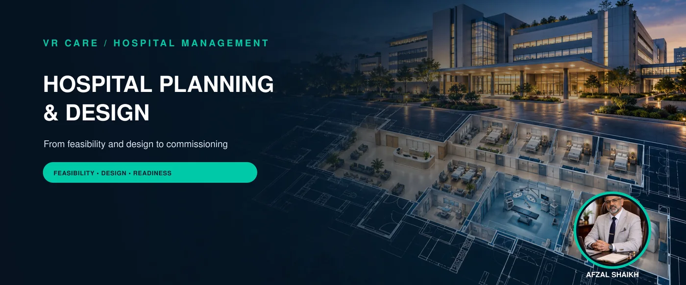
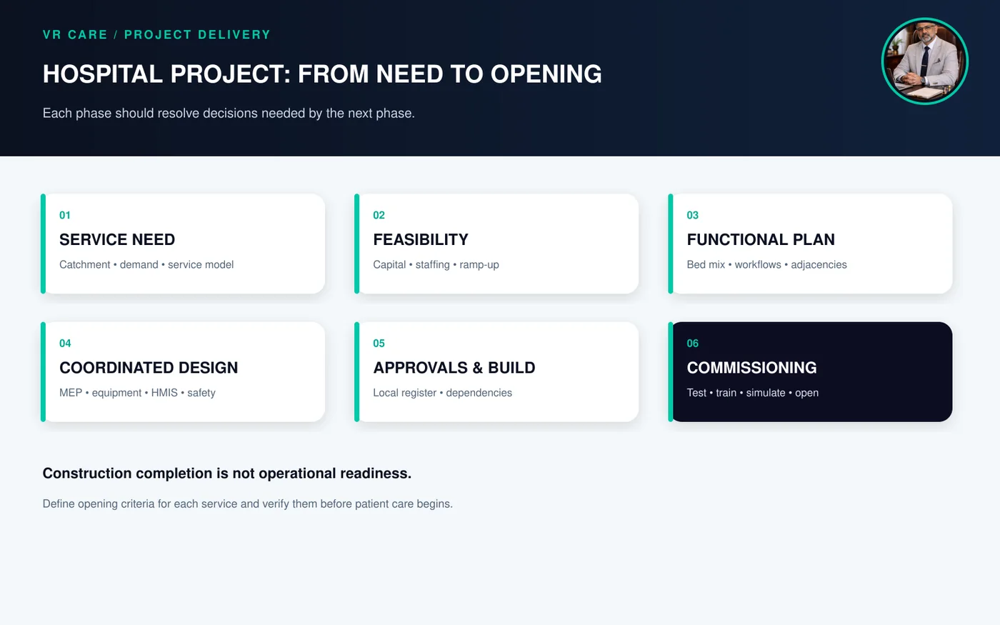
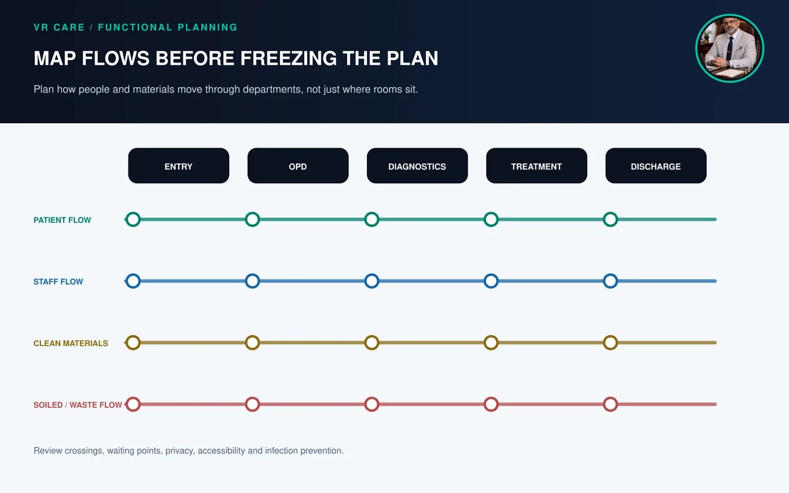

How to Plan and Design a Hospital That Can Operate Well from Day One
By Afzal Shaikh · Hospital Operations & Management Consultant

A hospital project should start with service need and operating feasibility, then move through site and capacity planning, clinical workflows, functional layout, infrastructure, equipment, digital systems, approvals, recruitment, testing and commissioning. Include people who understand clinical work and day-to-day operations in design reviews. A striking building can still struggle if bed mix, staffing, patient flows, utilities, medical gases, infection-control routes, IT and budgets are not coordinated.
Hospital planning is an operating decision
Hospital planning and design are often split: architects draw a building, construction teams execute it, and operations staff join near opening. That sequence can create expensive changes when actual services and patient journeys do not fit the plan.
A hospital is a connected operating system. The emergency entrance affects triage and diagnostics; imaging location affects transport; OT, CSSD, recovery and ICU relationships affect turnaround and safety; bed mix affects staffing and financial viability. Digital workflows, stores, waste movement, utilities and maintenance also need to be in the brief.
Bring hospital operations, clinical leadership, nursing, infection prevention, biomedical engineering, facility management, finance, IT and design professionals together early. Civil authorities and public-sector project teams should map applicable service standards, procurement rules, local development controls and approval pathways from the start.
A practical hospital project sequence

Figure 1. Hospital project sequence from need definition to opening
1. Define the service need and catchment
Clarify who the hospital will serve, which conditions and services it will address, and how people access care now. Review local population, referral patterns, transport, existing providers, payer mix, specialist availability and service gaps. Base the plan on local evidence rather than a generic market-potential slide.
For government and public-facility projects, India’s Indian Public Health Standards (IPHS) provide service and infrastructure references for facilities such as district and sub-district hospitals, CHCs and PHCs. IPHS is a public-facility planning reference; it does not replace private-hospital licensing, local building rules or programme-specific criteria. Source: IPHS Revised Guidelines 2022.
2. Build the clinical and service model
List specialties, clinical pathways, diagnostics, emergency capability, day-care and inpatient services, critical care and other planned services. For each, define hours, referral needs, equipment, skill mix, support departments and dependencies. Do not add a department solely because a competitor has it. Each service needs clinical leadership, operating capacity, appropriate infrastructure, staffing and a sustainable financial plan.
3. Test feasibility and phasing
Model capital expenditure, pre-opening costs, working capital, staffing, utilities, maintenance, consumables, revenue assumptions, ramp-up and downside scenarios. Separate licensed capacity from staffed, equipped and operational capacity. Phase the project when demand, funding or recruitment capacity is uncertain.
Stress-test lower occupancy, delayed approvals, recruitment gaps, payer onboarding, construction escalation and slow service-line ramp-up. Include long-term maintenance costs for equipment and infrastructure. VR Care’s feasibility study and DPR support covers this stage.
4. Confirm capacity and bed mix
Select bed mix using service strategy, patient acuity, staffing, local demand and support services. Plan inpatient beds with emergency observation, ICU/HDU, day-care, recovery and other service-specific spaces. Include nursing stations, clean/soiled utility, medication preparation, stores, toilets and staff/family areas. A room built but not staffed and supported is not safe operating capacity.
5. Map patient, staff, material and information flows

Figure 2. Flow planning across hospital service zones
Draw OPD, emergency, admission, transfer, diagnostics, surgery, discharge and follow-up journeys. Separately map staff, clean/soiled materials, linen, food, medicines, biomedical waste and maintenance access. Identify intersections, waits and transport delays. Include wayfinding, accessibility, privacy, dignity and family communication. Test drawings with users and real scenarios, not only a plan view.
6. Coordinate infrastructure, equipment and technology
Use room data sheets and equipment schedules covering electrical loads, UPS, HVAC, medical gases, water, drainage, fire safety, data connectivity, access control, acoustics, shielding where required and maintenance clearance. Confirm interface owners among architect, MEP consultant, suppliers, IT and departments.
Plan HMIS alongside workflows: registration, appointments, EMR, LIS, PACS, pharmacy, billing, TPA, accounts, HR, inventory, dashboards and patient/doctor apps where relevant. Test integrations, roles, downtime and reporting before go-live. See VR Care’s hospital software and digital workflows services.
7. Plan approvals, quality and safety early
Maintain a location-specific approvals register with authority, requirement, dependency, owner and date. Depending on location and project scope, approvals may include land use, building plan, fire and life safety, pollution control, biomedical waste, lift and electrical, clinical-establishment registration and other licences. Requirements vary; use qualified local professionals and the relevant authorities.
Use applicable NABH standards and programme requirements to inform quality, safety, infection control, facility management and documentation. Accreditation preparation does not replace statutory approvals. Source: NABH Hospital Accreditation Programme.
8. Commission before opening
Commissioning is more than a ribbon-cutting. Complete equipment acceptance, utility testing, medical-gas verification, emergency drills, IT and downtime testing, HMIS setup, pharmacy/stores readiness, SOP approval, recruitment and competency checks, mock patient journeys and vendor-response plans.
Simulate emergency arrival, patient transfer, OT cases, power or oxygen interruption, system downtime, discharge and claim submission. Record issues, owners and closure evidence. Open services in phases only when staffing, equipment, processes and approvals are ready.
Hospital design review checklist
| Area | Questions for the team |
|---|---|
| Service model | Is the plan based on evidenced need and an executable operating model? |
| Bed mix | Does capacity match demand, staffing, acuity and support services? |
| Patient movement | Are entry, registration, consultation, diagnostics and discharge flows clear? |
| Clinical support | Do OT, CSSD, recovery, ICU, pharmacy, lab and imaging relate efficiently? |
| Infection prevention | Are clean/soiled flows, isolation, hand hygiene and waste routes planned? |
| Infrastructure | Are power, HVAC, gases, water, fire, IT and maintenance coordinated room by room? |
| People | Are staffing, roster, training and hiring timelines realistic? |
| Digital systems | Are workflows, interfaces, roles, reports and downtime plans specified? |
| Approvals | Is there a local register with owners, dependencies and evidence? |
| Commissioning | Are mock runs, acceptance tests and opening criteria defined? |
Common hospital planning mistakes
- Designing for bed count before confirming services and demand
- Freezing drawings before nursing, operations, biomedical, IT and facility reviews
- Underestimating stores, staff, waste, housekeeping and maintenance spaces
- Buying advanced equipment without staffing, demand or service planning
- Treating HMIS as a last-stage software purchase
- Leaving approvals and licensing to the final months
- Confusing construction completion with operating readiness
- Opening every service despite incomplete staffing or training
Management takeaway
Design a workable hospital from the operating model outward. Establish service need, test financial and staffing feasibility, map workflows, coordinate building systems and technology, maintain local approvals and rehearse operations before opening. Review the project as a whole care-delivery system with the people who will run it.
VR Care supports hospital development through hospital operations and management services, new hospital project planning and operational and management audits. Define project deliverables, professional responsibilities, approvals, implementation scope and charges clearly. Once open, track performance with hospital KPIs and keep hospital SOPs current.
Frequently asked questions
What is hospital planning and design?
It coordinates service model, capacity, workflows, layout, infrastructure, equipment, technology, staffing, approvals and commissioning so a facility can operate safely and sustainably.
What should be planned first when building a hospital?
Start with service need, catchment, clinical model, feasibility and operating assumptions. These guide bed mix, layout, equipment, staffing and phasing.
Why involve operations teams in design?
They understand patient journeys, rosters, stores, cleaning, maintenance, billing and discharge. Early review can catch impractical layouts before costly site changes.
How do you choose a hospital bed mix?
Use local demand, specialty strategy, acuity, staffing, support services, referrals and financial feasibility. Planned beds do not equal operational capacity until equipped and staffed.
What is the difference between construction completion and commissioning?
Construction completion describes building progress. Commissioning checks that spaces, utilities, equipment, digital systems, staff, workflows, approvals and emergency procedures work together before services start.
Can IPHS guide a private hospital design?
IPHS is a reference for public health facilities and government infrastructure. Some ideas may inform planning, but private hospitals must follow applicable local building, licensing and programme requirements.
When should HMIS planning begin?
During service and workflow planning, not after construction. Early planning supports networks, hardware, interfaces, data, staff roles, reports and downtime procedures.
Further reading
- National Health Mission: IPHS Revised Guidelines 2022
- DGHS/MoHFW: Hospital Manual, April 2025
- NABH: Hospital Accreditation Programme
- VR Care: New Hospital Project Planning
- VR Care: Feasibility Study & DPR
- VR Care: Hospital Operational & Management Audit
Illustrations are editorial graphics and do not document a specific client project. Approval, licensing and design requirements vary by location and project scope; confirm them with qualified local professionals and the relevant authorities.